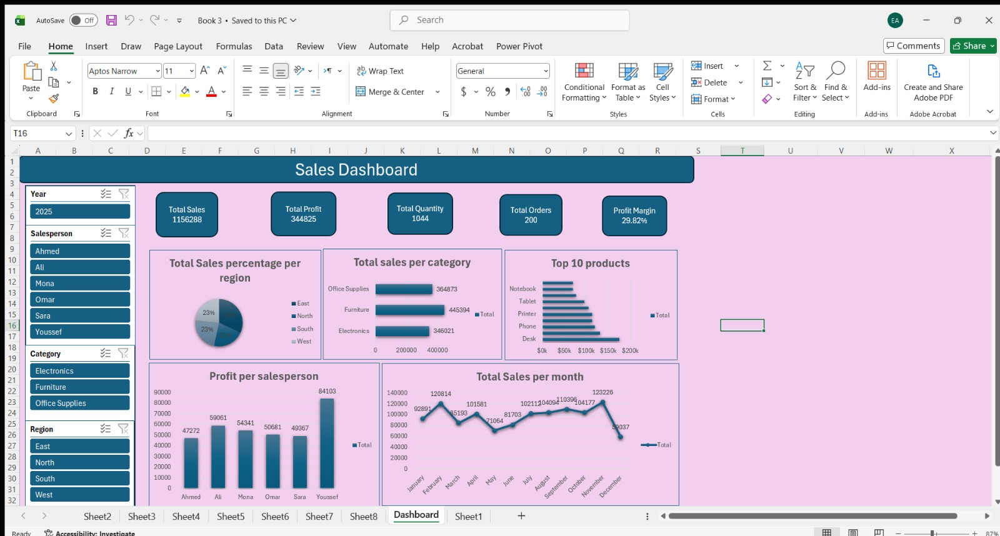

Sales Performance Dashboard
An interactive sales dashboard created in Microsoft Excel to analyze sales performance, profitability, product performance, regional contribution, salesperson performance, and monthly sales trends.
Project Features
Tools and Techniques
Project Note:
Built using a prepared dataset; no data cleaning was performed as part of this project. Built using native Microsoft Excel formulas, PivotTables, charts, and interactive slicers without Power Query or DAX modeling.